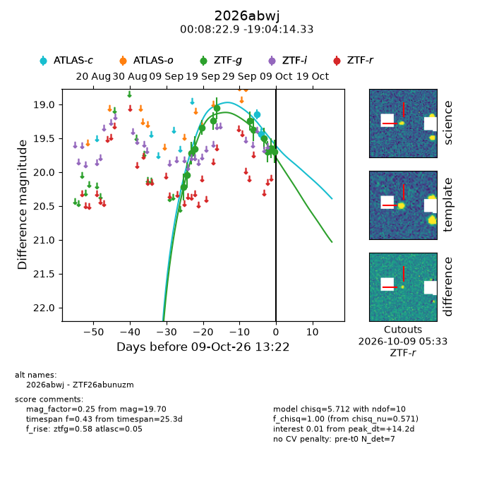
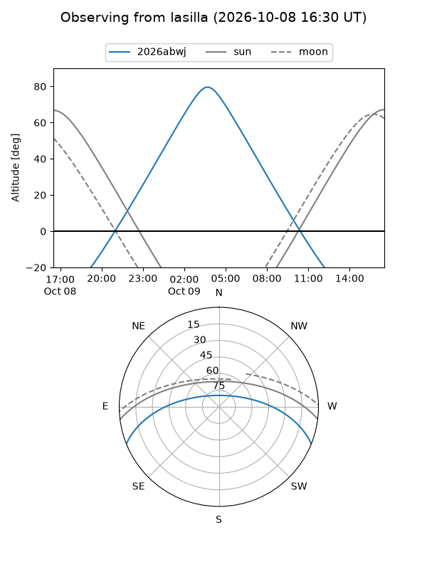
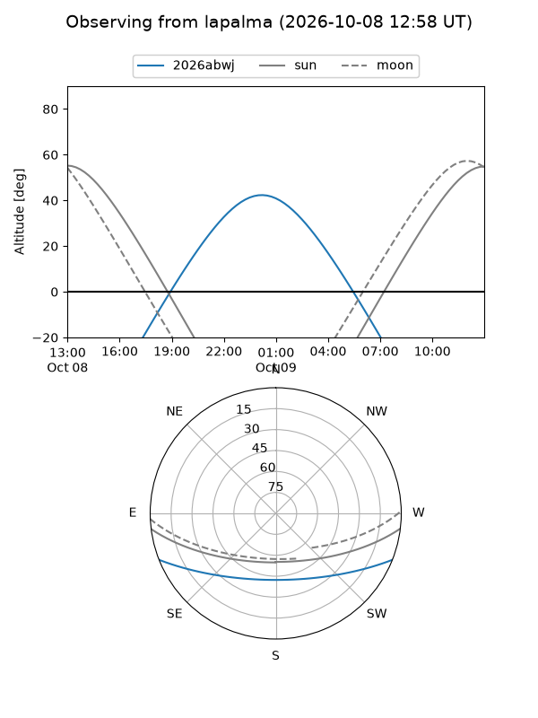
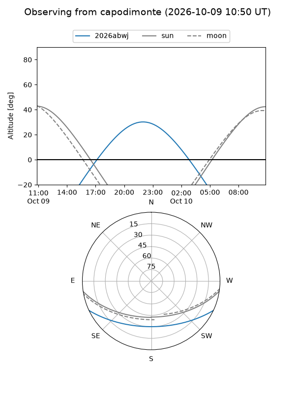
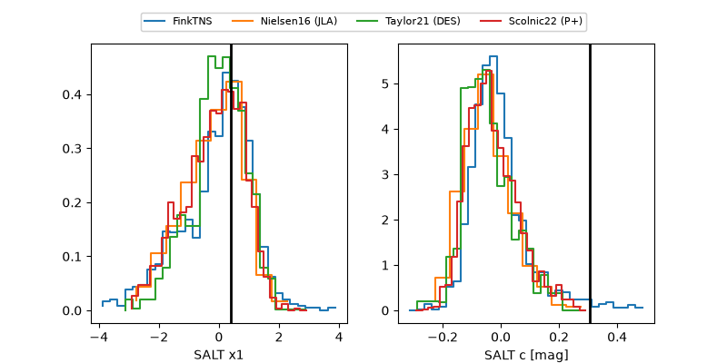

2026abwj
Target 2026abwj at 2026-10-09 13:25
Aliases and brokers:
FINK-ZTF: ztf.fink-portal.org/ZTF26abunuzm
Lasair-ZTF: lasair-ztf.lsst.ac.uk/objects/ZTF26abunuzm
ALeRCE-ZTF: alerce.online/object/ZTF26abunuzm
YSE-PZ: ziggy.ucolick.org/yse/transient_detail/2026abwj
TNS name: wis-tns.org/object/2026abwj
Direct TNS query: direct search
alt names
ZTF26abunuzm (ztf,fink_ztf)
2026abwj (tns,yse)
Coordinates:
equatorial (ra, dec) = 2.0954,-19.07065
equatorial (HMS+DMS) = 00:08:22.90,-19:04:14.33
galactic (l, b) = (69.8433,-77.24614)
Flags:
peak dt: +14.2
Photometry:
last atlasc=19.44, ztfg=19.70
2 atlasc, 13 ztfg detections
Lightcurve

Visibility



Additional plots
